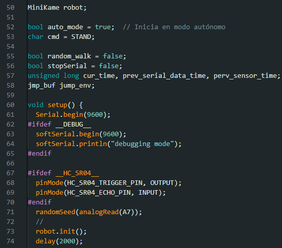
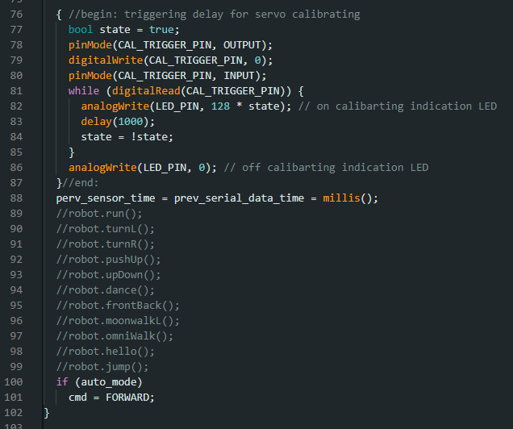
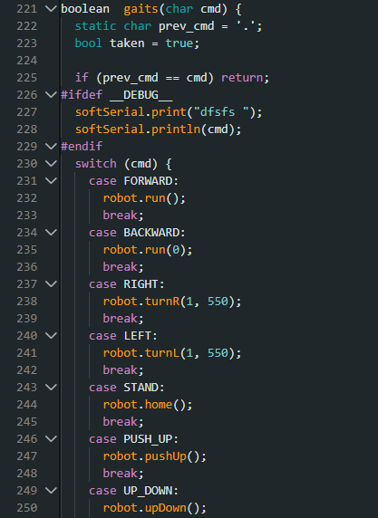

Instrucciones
En el siguiente apartado encontramos el código base para el desarrollo de nuestro robot.
Sigue los siguientes pasos para que puedas programar a la ARAÑA-TECH.
Analiza cada parte del código y su funcionamiento.
Â
Parte N°1

Programa para Arduino que configura la comunicación serial por software y la integración de diferentes librerÁas, como GoBLE y MiniKame, probablemente para controlar un robot pequeño. El código incluye opciones de depuración y permite, si se descomenta una lÁnea especÁfica, activar el uso de un sensor ultrasónico HC-SR04 para medir distancias, definiendo los pines de disparo y eco, asà como los valores mÁnimos y máximos de distancia para el sensor.
Parte N°2

Esta parte del código define una serie de constantes mediante la directiva #define para asignar nombres a pines, intervalos de tiempo y comandos de control que serán utilizados en el programa, facilitando la lectura y el mantenimiento del código; incluye identificadores para pines especÁficos (como CAL_TRIGGER_PIN y LED_PIN), intervalos de tiempo para eventos (TIME_INTERVAL y SERIAL_DATA_PERIOD), comandos para cambiar de modo (como activar o desactivar el modo inalámbrico), y letras asociadas a distintas acciones o movimientos del robot (adelante, atrás, izquierda, derecha, quieto, movimientos diagonales y especiales como saludo y baile), asà como valores numéricos para patrones de movimiento más complejos.
Parte N°3

Esta parte del código configura la inicialización del robot MiniKame en modo autónomo al encenderlo, definiendo variables globales de control como el modo automático, comandos, y flags para caminata aleatoria o uso del puerto serial. En la función setup(), se inicia la comunicación serial a 9600 baudios, y si está habilitado el modo de depuración (__DEBUG__), también se inicia softSerial y se imprime un mensaje de depuración. Si está definido el sensor ultrasónico (__HC_SR04__), se configuran sus pines de disparo y eco como salida y entrada respectivamente. Luego, se establece una semilla aleatoria usando una lectura analógica del pin A7, se inicializa el robot con robot.init(), y se aplica un retardo de 2 segundos para dar tiempo a que el sistema se estabilice antes de comenzar el funcionamiento principal.
Parte N°4

Esta parte del código realiza una rutina de calibración para los servomotores del robot, utilizando un pin de activación (CAL_TRIGGER_PIN) y un LED indicador (LED_PIN). Primero, configura el pin de calibración como salida y lo pone en bajo, luego lo cambia a entrada para esperar una señal externa. Mientras se mantenga activado (digitalRead en alto), el LED parpadea cada segundo indicando que está en modo de calibración. Al terminar, apaga el LED. Después de la calibración, se inicializan las variables de tiempo para el sensor y la comunicación serial con el valor actual de millis(), lo que sincroniza los temporizadores del sistema. Finalmente, si el robot está en modo autónomo (auto_mode es verdadero), se establece el comando inicial en FORWARD, indicando que debe comenzar a avanzar. Además, se observan varias funciones comentadas que representan posibles movimientos del robot, como caminar, girar, saltar o bailar, pero están inactivas en este fragmento.
 Parte N°5

Esta parte del código corresponde a la función loop(), que se ejecuta de forma continua en Arduino. Primero, guarda el tiempo actual usando millis() y luego verifica si hay datos disponibles por el puerto serial. Si los hay, lee un carácter y según su valor, determina si debe cambiar el modo de operación del robot: 'X' activa el modo inalámbrico (manual) y 'x' el modo autónomo. En ambos casos, se detiene el movimiento estableciendo el comando en STAND. Si está en modo inalámbrico, el código interpreta diferentes caracteres recibidos como comandos de movimiento: por ejemplo, 'F' significa avanzar, 'B' retroceder, 'L' girar a la izquierda, 'R' a la derecha, 'I' realizar el movimiento "arriba y abajo", 'G' hacer flexiones, 'H' el gesto de saludo, y 'J' una danza. Cualquier otro carácter establece el comando por defecto STAND, que detiene al robot.
Parte N°6

Esta parte del código controla el movimiento automático de un robot. Cuando el modo automático (auto_mode) está activado, el robot realiza una secuencia de movimientos predefinidos almacenados en el arreglo movements. El código utiliza un temporizador (TIME_INTERVAL) para cambiar el movimiento cada cierto tiempo. Si random_walk es falso, el robot sigue la secuencia en orden; si es verdadero, elige movimientos al azar del arreglo. Finalmente, el comando de movimiento (cmd) se envÁa a la función galls para ejecutarlo, y el estado del robot se actualiza con robot.refresh().
Parte N°7

Este fragmento de código define la función check_goble(), que se encarga de leer las entradas de un control remoto (como un joystick o botones) para controlar los movimientos de un robot. Primero, verifica si hay datos disponibles desde el dispositivo "Goble". Si es asÁ, lee los valores del joystick en los ejes X e Y (joystickX y joystickY), asà como el estado de los botones. Dependiendo de estos valores, asigna un comando de movimiento (cmd) al robot, como avanzar (FORWARD), retroceder (BACKWARD), girar a la derecha (RIGHT) o izquierda (LEFT), o realizar acciones especÁficas como PUSH_UP, MOON_WALK, DANCE, entre otros. Si no se detecta ninguna entrada relevante, el robot permanece en modo STAND (quieto). La función devuelve true si se detectó actividad en el control remoto, cerrando la comunicación serial para evitar conflictos.
Parte N° 8

Depuración (Debug):
Si está activada la opción __DEBUG__, se imprime el comando recibido (cmd) a través de un puerto serial secundario (softSerial).
Cambio entre modo manual y automático:
Si se presiona el botón SELECT del control (cable.readSwitchSelect()), se alterna el estado de auto_mode (activa/desactiva).
Si se activa el modo automático (auto_mode = true), salta a la etiqueta __auto (no visible en este fragmento).
Si se desactiva (auto_mode = false), el robot se detiene (cmd = STAND).
Modo automático:
Define un array de movimientos preestablecidos (movements[]), como avanzar (FORMARD), girar (LEFT, RIGHT), bailar (DANCE), caminar lateral (MOON_WALK), etc.
Usa un temporizador (TIME_INTERVAL) para cambiar de movimiento periódicamente.
Dos formas de selección de movimiento:
Secuencial (random_walk = false): Avanza en orden por el array (c++).
Aleatorio (random_walk = true): Elige un movimiento al azar del array usando random().
Errores/observaciones en el código:
Hay un error de sintaxis en if (cur_time = old_time >= TIME_INTERVAL) (deberÁa ser if (cur_time - old_time >= TIME_INTERVAL)).
auto; parece ser un error tipográfico (quizás deberÁa ser goto auto;).
random(@, ...) y c * (sizeof...) son incorrectos (deberÁan ser random(0, ...) y c % (sizeof...)).
Parte N°9

Evitar repetición de comandos:
Compara el comando actual (cmd) con el anterior (prev_cmd). Si son iguales, la función termina sin hacer nada (return), evitando ejecutar el mismo movimiento repetidamente.
Modo depuración (Debug):
Si __DEBUG__ está definido, imprime el comando actual (cmd) a través de softSerial para facilitar el diagnóstico.
Ejecución de movimientos (switch-case):
Según el valor de cmd, llama a diferentes métodos del objeto robot:
FORMARD: Hace que el robot avance (robot.run()).
BACKMARD: Detiene el robot (robot.run(0)).
RIGHT/LEFT: Gira el robot a la derecha o izquierda (robot.turnR()/robot.turnL()).
STAND: Vuelve a la posición inicial (robot.home()).
PUSH_UP: Realiza un movimiento de flexiones (robot.pushUp()).
UP_DOWN: Ejecuta un movimiento de subida/bajada (robot.upDown()).
Parte N°10

Comandos EspecÁficos:
HELLO:Â El robot ejecuta un gesto de saludo (robot.hello()).
MOON_WALK:Â Realiza un movimiento lateral caracterÁstico (robot.moonwalk()).
OWNI_WALK_L y OWNI_WALK_R:
OWNI_WALK_L usa robot.omniWalk(false) para caminar en modo omnidireccional hacia la izquierda.
OWNI_WALK_R usa robot.omniWalk() (sin parámetro) para caminar hacia la derecha (asumiendo true por defecto).
DANCE:Â El robot inicia una rutina de baile (robot.dance()).
FRONT_BACK: Realiza un movimiento oscilatorio hacia adelante y atrás (robot.frontBack()).
Manejo de Comandos No Válidos:
Si el comando no coincide con ningún case, se asigna taken = false (indicando que el comando no fue reconocido).
Actualización y Retorno:
Si el comando fue válido (taken = true), se guarda en prev_cmd para evitar repeticiones.
La función retorna el valor de taken (true/false), útil para verificar si el comando fue ejecutado correctamente.
Parte N°11

Este fragmento de código incluye dos funciones principales: pause() y detect_obstacle(), junto con una función auxiliar distance_measure(). La función pause() detiene la ejecución del programa durante un perÁodo especÁfico (period), pero durante este tiempo verifica continuamente si hay entrada del control remoto (check_goble()); si se detecta una interacción, utiliza longjmp para salir del bucle. Por otro lado, detect_obstacle() utiliza un sensor de distancia (HC-SR04) para evitar obstáculos: si la distancia medida (cm) es menor que MIN_DISTANCE, el robot se detiene (STAND); si está dentro de un rango especÁfico (MIN_DISTANCE a MAX_DISTANCE), retrocede (BACKWARD). La función distance_measure() (incompleta en el fragmento) se encarga de medir la distancia mediante pulsos ultrasónicos. En conjunto, este código permite pausas controladas con interrupción remota y mecanismos de evitación de obstáculos para el robot.
Parte N°12

EnvÁo del pulso ultrasónico:
Se activa el pin de trigger (HC_SR04_TRIGGER_PIN) con un pulso bajo (LOW), luego alto (HIGH) durante 5 microsegundos, y finalmente bajo nuevamente para iniciar la medición.
Lectura del eco:
Se mide la duración (duración) del pulso alto (HIGH) en el pin de eco (HC_SR04_ECHO_PIN), que corresponde al tiempo que tarda el sonido en ir y volver del obstáculo.
Cálculo de la distancia:
La velocidad del sonido se aproxima a 29 microsegundos por centÁmetro (ida y vuelta).
La distancia en centÁmetros (cm) se obtiene dividiendo duración entre 29 y luego entre 2 (solo la ida).
.png)

 En esta paso realizamos la conexión de los diferentes componentes de nuestro circuito.
En esta paso realizamos la conexión de los diferentes componentes de nuestro circuito..png)
.png)